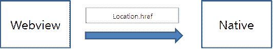

Hybrid App 개선 방향
현 상황 : 현재 간헐적으로 웹뷰에서 Native 호출시 앱이 죽는 현상이 발생
개선 방향 : Native 호출시 location.href 를 이용 하여 Native 에 Sync 형태로 호출 하고 있음 해당 방식은 Native 에서 여러 메시지들이 동시에 받을 경우 간헐적으로 앱이 죽는 현상이 발생하며 Native 호출시에는 반드시 ASync 형태로 호출 하는 형태로 변경 해야 함
AS – IS
To – BE